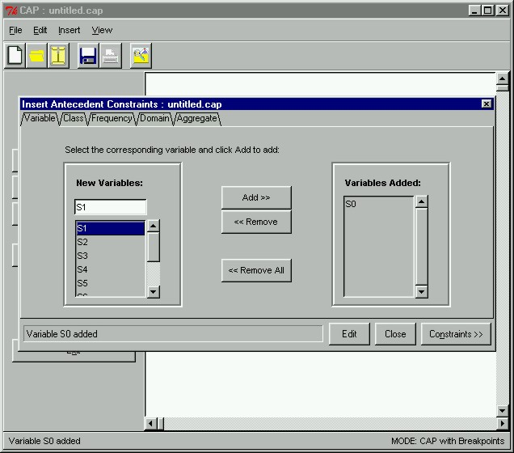

 |
Creating Antecedent ConstraintsThe first thing we have to do is create constraints for the antecedent. We have now opened the Insert Antecedent Constraints window by clicking on the Antecedent Constraints button in the main window. However, before we can proceed to create antecedent constraints, we first have to specify a set variable to represent the antecedent set. In the prototype, all variables preceded by "S" represent the antecedent, whereas all variables preceded by "T" represent the consequent. Here we will select the variable "S0" to represent our antecedent set by selecting the variable from the listbox on the left and clicking Add >>.
|